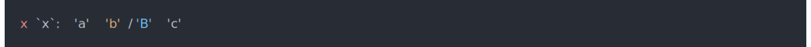
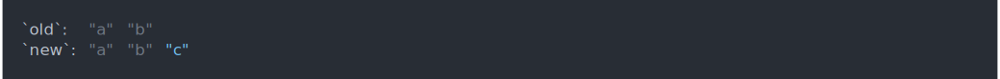
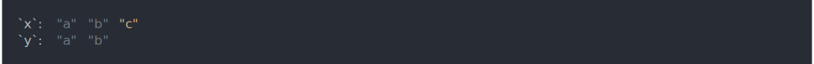
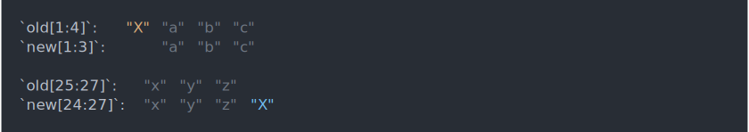
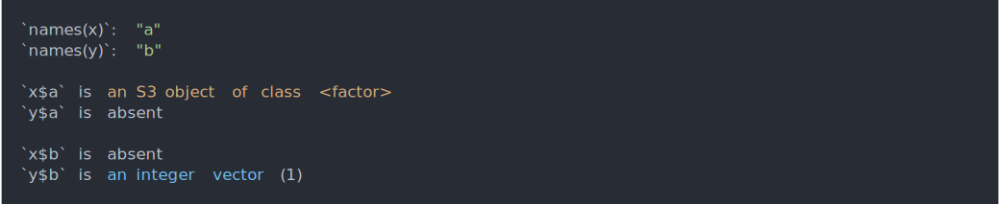
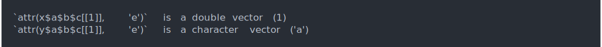
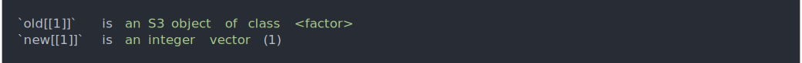
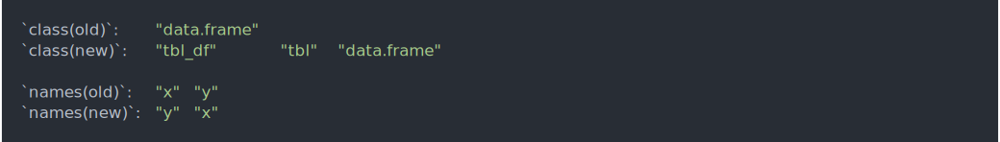

The goal of waldo is to find and concisely describe the difference between a pair of R objects, with the primary goal of making it easier to figure out what’s gone wrong in your unit tests.
waldo::compare() is inspired by all.equal(), but takes additional care to generate actionable insights by:
- Ordering the differences from most important to least important.
- Displaying the values of atomic vectors that are actually different.
- Carefully using colour to emphasise changes (while still being readable when colour isn’t available).
- Using R code (not a text description) to show where differences arise.
- Where possible, comparing elements by name, rather than by position.
- Erring on the side of producing too much output, rather than too little.
Installation
You can install the released version of waldo from CRAN with:
install.packages("waldo")Comparisons
When comparing atomic vectors, compare() produces diffs (thanks to diffobj) that highlight additions, deletions, and changes, along with a little context:
-
Deletion

-
Addition

-
Change

-
Long vectors with short differences only show local context around changes, not everything that’s the same.

Depending on the relative size of the differences and the width of your console you’ll get one of three displays:
-
The default display is to show the vectors one atop the other:
compare(letters[1:5], letters[1:6])
-
If there’s not enough room for that, the two vectors are shown side-by-side:

-
And if there’s still not enough room for side-by-side, the each element is given its own line:

When comparing more complex objects, waldo creates an executable code path telling you where the differences lie:
-
Unnamed lists are compared by position:

-
Named lists, including data frames, are compared by name. For example, note that the following comparison reports a difference in the class and names, but not the values of the columns.
df1 <- data.frame(x = 1:3, y = 3:1) df2 <- tibble::tibble(rev(df1)) compare(df1, df2)
-
Recursion can be arbitrarily deep:
x <- list(a = list(b = list(c = list(structure(1, e = 1))))) y <- list(a = list(b = list(c = list(structure(1, e = "a"))))) compare(x, y)